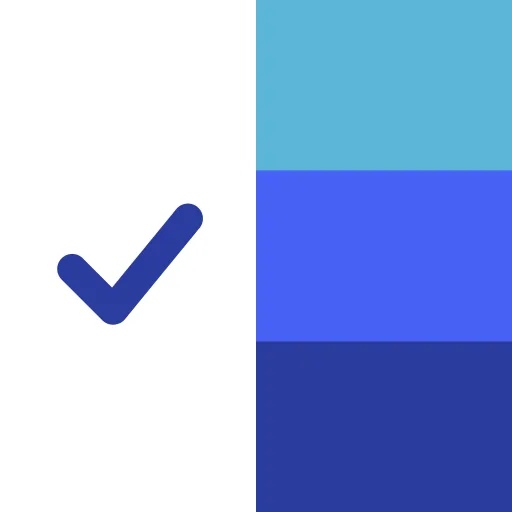

3 Tasks
Daily to-do list · iPhoneThree tasks a day. Get what matters done.
Pick three tasks each day and work through them with a timer.

Just 3 tasks. Every day.
A timer for every task.
Fewer tasks. More done.

Finish and celebrate.
Simple focus. Real progress.